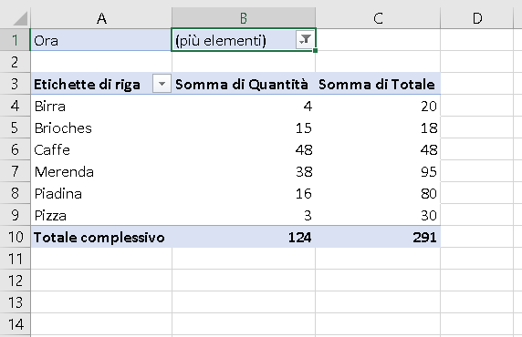

Cosa è una Pivot?
Nella sua forma più semplice, una tabella pivot prende i dati e li riepiloga in modo da poterli interpretare, senza dover digitare formule. Questo significa che dato un dataset con una tabella pivot con questo strumento si è in grado di calocare statistiche di base (o anche fare grafici) sull'intero set di dati.
Come poi si vadrà nell'esempio la parte più difficile di questo strumento è porsi le giuste domande da testare sui dati, ma innanzitutto vediamo come si costruiscono:
Ipotiziamo di dover analizzare il seti di dati contenuto in questo file (cliccare sul link per scaricarlo).
Una volta scaricato e aperto il file dovrebbe comparire cosi:
Come prima cosa è necessario selezionare l'intera matrice di dati (o manualmente o con la combinazione di tasti CTRL+A) e cliccare su INSERISCI > TABELLA PIVOT:
Uscirà una finestra con specificata la posizione della tabella che vogliamo convertire in pivot. Nella stessa finestra sarà possibile scegliere se collocare la "pivot" in un nuovo foglio di calcolo o in una posizione specifica a nostra scelta (è quasi sempre cosigliabile crearla in un nuovo foglio di calcolo per evitare problemi grafici di visualizzazione del foglio).
Una volta selezionate le varie opzioni e cliccato su OK, ci troveremo davanti a questa schermata:
Nella parte di destra si puo notare una sezione dove sono inserite i titoli delle colonne della nostra tabella di partenza (le variabili) e nella parte sottostante 4 quadrati nei quali vanno trascinate le variabili visualizzare una tabella pivot.
Per comprendere l'utilità di questo strumento di excel occorre prima porsi una domanda, ad esempio:
"Quali e quanti oggetti vengono comprati dalle 8:00 alle 20:00?". Per rispondere a questa domanda trasciniamo la variabile "categoria" all'interno del quadrato "Righe" per indicare che la variabile di nostro interesse deve essere relativa alla natura dell'oggetto.
Come secondo step andiamo ad inserire in "valori" la variabile "totale" che rappresenta quanto viene speso per quella categoria di oggetto e la variabile "Quantità" la quale rappresenta il numero di oggetti acquistati.
Una volta inserite tutte le variabili dobbiamo filtrare il risultato per l'orario della richiesta inserendo come variabile filtro "ora" ed andando poi a selezionare gli orari relativi alla richiesta.
In definitiva per rispondere alla domanda, una volta cliccato su OK, troviamo che:

Se al posto di quanto abbiamo speso ci interessa sapere quanto abbiamo speso per ogni volta occurre cliccare sul triangolo difianco alla variabile inserita all'interno dei valori e poi cliccare sopra "Impostazioni campo valori".
Una volta cliccato su "Impostazioni campo valori" si aprira una finestra nella quale occorre selezionare al posto della somma la media.
Una volta cliccato su OK la tabella pivot si riaggiornerà nel seguente modo: